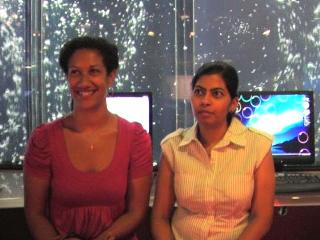
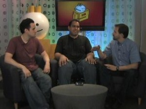
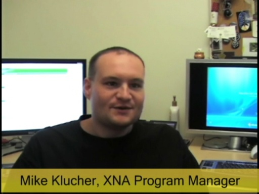

Blogs - Dan Fernandez
Blogs - Dan Fernandez
Rob Relyea: Kinect for Windows SDK Beta 2 Released! [0:22:27] [2011/11/05]The Kinect for Windows SDK Beta 2 is now available for download! Rob Relyea joins us to give a refresher on what the Kinect SDK can do, and what's new for Beta 2. There are a number of under-the-hood…
Rob Relyea: Kinect SDK Beta 1 Refresh is live [0:09:09] [2011/08/04] Now that the Kinect for Windows SDK Beta 1 Refresh is live, we had a chance to talk to Rob Relyea a Principal Program Manager Lead on the Kinect for Windows SDK team to talk about what changed in the…
Jay Schmelzer: Introducing Visual Studio LightSwitch [0:48:01] [2010/08/04]Visual Studio LightSwitch is a new tool aimed at building data-driven applications, like an inventory system or a basic customer relationship management system incredibly
easy. LightSwitch…
ThisWeekC9 - PDC10, Azure in a box, Windows Phone 7 Tools Beta, and Kings Quest [0:17:49] [2010/07/17]This week on Channel 9, Dan and Brian discuss the week's top developer news, including:
PDC10 - Oct 28-29, live from the Redmond campus, 1,000 people, $1,000 to attend, (register here). If you can't…
Simon Calvert & Scott Hunter: WebMatrix and the new Razor Syntax [0:55:40] [2010/07/07]
WebMatrix is a new lightweight tool, server, database and Web programming framework. The goal is to provide an easy on-ramp to building Web applications and to provide tools to easily create and…
Lane McCullough: Dell hardware running IE 9 Canvas demos [0:01:57] [2010/07/07]Lane McCullough from Dell shows off the performance improvements of hardware acceleration that Internet Explorer 9 Platform Preview 3 has over Firefox in the Asteroid
Belt Canvas tag sample.…
David Ragones: NVIDIA hardware and IE9 [0:02:52] [2010/07/07]
David Ragones from NVIDIA shows off the 10x+ performance improvement between a hardware accelerated Internet Explorer 9 Platform Preview 3 and Chrome 5 using the
Potato Gun demo. …
Dave Hoff: AMD Hardware and Internet Explorer 9 [0:01:59] [2010/07/07]Dave Hoff from AMD shows off AMD-based notebooks and the power of hardware acceleration with Internet Explorer 9 Platform Preview 3.
Download
Internet Explorer 9 PP3 Try the
Internet Explorer 9…
Debby Lee: ASUS Hardware and Internet Explorer 9 [0:01:19] [2010/07/07]Debbie Lee from ASUS discusses ASUS hardware that supports Internet Explorer 9 Platform Preview 3.
Download
Internet Explorer 9 PP3 Try the
Internet Explorer 9 Test Drive site
TWC9: C9 Live at PDC, Teamprise, SDKs galore, [0:17:01] [2009/11/15]This week on Channel 9, Dan is joined by Clint Rutkas where we discuss the week's top developer news, including:- Channel 9 Live at PDC - Three days of live streams with big names including Ray Ozzie,…
Noah Coad: An Overview of Visual Studio Express 2010 [0:24:47] [2009/11/05]
In this interview, we talk to
Noah Coad, the Program Manager for Visual Studio Express. We talk about- Who the customer target for Express is - What features are and aren't in Express- Demos of the…
TweetCraft - A World of Warcraft Twitter Client [0:01:06] [2009/07/02]A gratuitious trailer for
TweetCraft, a World of Warcraft Twitter client.
Twitter is open source and includes:
- A Windows client written in C# and Windows Presentation Foundation
- A Warcraft…
[Swine-Flu-H1N1-Tracker-Web-Slice-Released]
This Week on C9: April Fools Day, open source MVC, ExceLINQ, and cool Silverlight apps [0:17:58] [2009/04/04]This week on Channel 9, Dan and Brian discuss the top developer news including:
- Scott Guthrie - ASP.NET MVC now is
OSI certified open source, using the Microsoft Public License.
- New…
Throwing Ten Thousand bouncy balls down a stairwell [0:01:04] [2009/04/01]David Norris and Larry Osterman are classic Microsoft pranksters (watch their original
Channel 9 interview for how they pranked Steve Ballmer, among others).
One of their weapons of choice is…
Softies pranking Softies: A step-by-step video for pranking co-workers [0:03:56] [2009/04/01]
Here at Microsoft, we like to have a little bit of fun, so a couple of months ago, Scott Stabbert built a VB.NET application to prank his co-worker, Xander. Watch and learn how Scott did it…
MIX09 Video Outtakes with Scott Guthrie [0:00:35] [2009/04/01]A quick video of some outtakes from Scott Guthrie's intro video at MIX 2009.
1st place - MIX09 Show Off Contest - Physics Helper using Silverlight [0:02:14] [2009/03/26]An overview of the Physics Helper Library, which allows you to draw objects in Expression Blend 2, and have those objects translated directly into Physics objects using the Farseer Physics Engine.…
2nd place - MIX09 Show Off Contest - Creating the Ganassi Racing Sidebar Gadget [0:03:00] [2009/03/26]
A Vista sidebar gadget was designed and created for the Chip Ganassi Racing team. This video walks through each stage of the process that we used at
projekt202 to go from concept to finished…
3rd place - MIX09 Show Off Contest - Stimulant Surface Applications 2009 [0:02:09] [2009/03/26]
Stimulant is an interaction design and development studio that specializes in new interaction paradigms on emerging hardware.
Microsoft Surface is an important part of our core offering. This is…
Honorable Mention - MIX09 Show Off Contest - WPF & The Emotiv Headset [0:02:48] [2009/03/26]
By leveraging the power of .NET combined with the EMOTIV thought control headset soon to be released later this year, users are able to control the WPF application using thought control alone.…
Honorable Mention - MIX09 Show Off Contest - Silverlight Commodore 64 Emulator [0:03:04] [2009/03/26]
Cycle-exact Commodore 64 emulator written in C#, much ported from C++ Frodo emulator. Done just to prove Silverlight can do almost anything. Most C64 hardware is emulated and it’s running…
Honorable Mention: MIX09 Show Off Contest - Playing in an augmented world [0:01:36] [2009/03/26]Realtime interaction with 3D objects using a webcam. Mix of managed and unmanaged code, tacking advantage of multi-core CPUs and GPUs for better interactivity.
Built by: YDreams
- Antao Almada,…
Honorable Mention - MIX09 Show Off Contest - Magister 5, a large LOB app in Silverlight [0:03:05] [2009/03/26]Magister 5 is a large line of business application for secondary schools in Holland, targeting management, staff, teachers students and parents. It is a 100 % Silverlight application, there is also a…
Q and A with Bill Buxton at MIX09 [0:56:56] [2009/03/24]
Nishant Kothary and Jonathan Carter host a live Q&A from MIX09 with Bill Buxton.
Q and A with Dean Hachamovitch at MIX09 [0:25:59] [2009/03/24]Mike Swanson hosts a live Q&A from MIX09 with Dean Hachamovitch on the newly released, Internet
Explorer 8.
Q and A with Scott Guthrie at MIX09 [0:49:22] [2009/03/24]Scott Hanselman hosts a live Q&A from MIX09 with
Scott Guthrie. You'll hear questions on future features of Silverlight, Silverlight adoption, Expression Blend, ASP.NET MVC, and much more.
Behind the scenes: How Scott Guthrie prepares for his MIX09 keynote [0:02:32] [2009/03/19]Take a behind-the-scenes look at just what goes into Scott Guthrie’s preparation for his MIX ‘09 keynote. We finally reveal the rituals and habits that get “The Gu” ready to deliver his…
Coding4Fun Demo - How to mask your voice using the Skype Voice Changer [0:03:20] [2009/02/15]Mark Heath (of NAudio fame) recently published a how-to
article for Coding4Fun that shows how he plugged into Skype's audio APIs to dynamically apply different sound effects to the audio stream to…
Coding4Fun with Brian Peek: WiiEarthVR is a Wiimote, Virtual Earth, WiiFit and VR Glasses [0:02:36] [2009/01/10]At PDC, Brian Peek showed off his WiiEarthVR project. Simply, put, the Coding4Fun project is .NET code that combines:- A Nintendo Wiimote controller to move forward or backwards- Virtual Earth 3D- A…
CodePlex Town Hall at PDC 2008 [0:58:11] [2008/12/03]At the first ever CodePlex Town Hall, CodePlex community members demo’ed their favorite projects, while the CodePlex team listen to feedback on upcoming feature designs and plans (CodePlex.com…
Celso Gomes: Styling a Silverlight based Twitter application with Expression Blend 2 [0:10:28] [2008/11/14]
This video shows how a designer can have a large impact on the look and feel of an application without having to write a lot of code or interfering with the core logic of the application. To…
[WOMENBUILD--Inspiring-Career-Paths-In-Technology]
Coding4Fun with Clint Rutkas: The Segway Skateboard [0:02:10] [2008/11/07]Clint Rutkas, our Coding4Fun Content Strategist and Academic Developer Evangelist shows off how he built a self-balancing Segway Skateboard in C#, and with
all mad scientist projects, hilarity…
David Pallmann & Mickey Williams: How Cloud Computing will Affect Every Developer [0:37:19] [2008/11/07]At PDC, we caught up with David Pallmann and Mickey Williams to share their thoughts on the impact that Cloud computing will have on the different development communities. Whether you're a backend…
Starting up a company? Microsoft BizSpark can help [0:03:42] [2008/11/06]Dan'l Lewin, Corporate Vice President of the Strategic and Emerging Business Team, talks about Microsoft BizSpark - a new program for startups that provides software, support and visibility. Lewin is…
Windows 7: Find and Organize Part 2 - Building Federated Search applications [0:23:59] [2008/11/04]In
Part 1, you saw the user experience of finding and organizing your files in Windows 7.
In Part 2, David Washington and Brandon Paddock show how developers can build federated search…
More PDC Fun with Laura [0:06:01] [2008/11/01]If you didn't get enough in
Part I, here's more attendee shenanigans for you with Laura.
Soma on Visual Studio for Windows Azure, Concurrency, and Windows 7 [0:10:43] [2008/10/30]S. Somasegar (better known as Soma) is the Senior Vice President in charge of the Developer Division which makes everything from Visual Studio, the Expression suite, and application runtimes including…
C9 Bytes: Don and Chris explain Oslo in 5 minutes [0:06:32] [2008/10/30]In this Channel 9 video, Don Box and Chris Anderson explain exactly what Oslo is and what it's used for.
Lucian Wischik and Lisa Feigenbaum: What's new in Visual Basic 10 [0:32:49] [2008/10/29]In this demo-heavy video, Lucian shows off a number of new features in Visual Basic 10 including Collection Initializers, better Office integration, inline functions, parallel LINQ, simpler type…
Windows 7: Find and Organize Part 1 - The User Experience [0:17:02] [2008/10/29]David Washington and Paul Gusmorino demonstrate the key enhancements in Windows 7 to finding and organizing your files. David and Paul show off the ways that the team has simplified the Windows…
[PDC-Keynote-video-and-live-blog]
Cogwheel: Building World of Warcraft Addons [0:18:04] [2008/10/24]At Blizzcon, we got a chance to interview Matthew Orlando aka "Cogwheel". Matthew is one of the best known AddOn and Macro developers (and a Wow MVP) in World of Warcraft and he's also the…
Joe Marini: Microsoft's direction with Visual Studio Extensibility [0:08:31] [2008/10/20]In this interview, you'll hear from Joe Marini, Director of the Development Tools and Ecosystem team as he discusses what he sees are the opportunities for ISVs extending Visual Studio, competing…
This Week on C9: Windows 7, Silverlight 2 ships, and PDC attendee fun [0:26:02] [2008/10/20]This Week on Channel 9, Brian and Dan talk about this week's developer news, including:
- Windows 7 is the official name of the next release of Windows
- Silverlight 2 RTWs (demo video),…
Scott Guthrie: Building a Silverlight 2 application [0:29:02] [2008/10/16]Note: Due to the screen resolution, we recommend you watch this in full screen mode or download the video.
Now that Silverlight 2 has released to the Web, we sat down with Scott Guthrie as he walks…
This Week on C9 Hell No! Countdown to PDC2008 Ambush Dan and Brian, Taking Over their Show for 10… [0:09:56] [2008/10/10]
Brian and Dan may have day jobs, but they are also doing a ton of work on PDC including running the
Show Off contest. Show Off is a really cool experience, but it’s kinda hard to explain in…
Bill Hill: The Future of Reading on the Web, Part 1 [0:44:56] [2008/10/09]Bill Hill - the man, the myth, the legend is back on Channel 9! Christian "LittleGuru" Liensberger and I got a chance to catch up with Bill on his latest work...
While many people know…
Countdown to PDC2008: What the heck are Microsofts Live Platform Services? Treadwell Tells All! [0:08:53] [2008/10/05]
What are the platform infrastructure details behind the Mesh technologies? Corporate Vice President of Live Platform Services, David Treadwell, will be spilling all the beans in his
PDC keynote in…
Countdown to PDC2008: King of the Geeks, Scott Guthrie, Previews PDC Keynote [0:09:52] [2008/10/04]
As Corporate Vice President of the .NET Developer Division, Scott will be giving a talk on client development covering both Silverlight and WPF at the
PDC. What else does the 6’4” Dev Div chief…
PDC 2008 is coming and I cant wait! [0:03:56] [2008/10/03]
Microsoft’s Professional Developers Conference 2008 is hitting the Los Angeles scene late October (27-30) and we got our best ad-agency guys and gals together to figure out how best to get the word…
Get Hired @ Microsoft, Episode 2: Partner with your Recruiter [0:12:24] [2008/10/02]
After sending us
your killer resume, a recruiter contacts you about a job at Microsoft. What’s next? In part two of “Get Hired at Microsoft,”
Staffing Consultant Theresa de la Osa and
Server…
Countdown to PDC2008: Parallel Computing and Getting Your Head in the Cloud [0:09:25] [2008/09/30]The chair of the PDC Symposia joins Mike and Jennifer this week to talk about the detailed workshops that will be offered on the last day of the conference.
Parallel Computing – A Detailed Look at…
Norman Guadagno: Announcing Visual Studio Team System 2010 [0:34:02] [2008/09/29]Norman Guadagno, the Director of Product Management for Visual Studio Team System shares the key enhancements coming in the next version of Visual Studio, officially named Visual Studio 2010. In this…
Get Hired @ Microsoft, Episode 1: Write a Killer Resume [0:09:19] [2008/09/24]
Step 1 for landing a job at Microsoft? Send us your resume!
Lisa Olson - Microsoft Staffing Consultant,
JobsBlogger, and Aggie computer science grad – shows you how to
apply for your dream…
Countdown to PDC 2008: This is the Software + Services PDC, Plus a Hard Drive Chock Full oBits is a… [0:04:28] [2008/09/23]
Okay, okay, maybe we’ve been a little too tight lipped about what we’re going to announce at the PDC this year. We’ve dropped a few hints with some of our recent guests on the show (Amitabh
…
Countdown to PDC2008: Extending the Data Platform to the Cloud [0:09:01] [2008/09/23]
Dave Campbell, a Microsoft Technical Fellow and SQL Server guru, talks about what his group has been working on and what they will be
unveiling at the PDC.
Dave is giving a session on…
Countdown to PDC2008: Amitabh Srivastava, Corporate Vice President of Cloud, Infrastructure, &… [0:09:02] [2008/09/18]
In a very special edition, the VP of CIS, joins Mike and Jennifer to talk about what his team will be revealing at PDC (well, he can’t really say that much yet – you’ll just have to go to the
PDC…
Countdown to PDC2008: Technical Fellow John Shewchuk Talks About His Talk at PDC2008 [0:10:34] [2008/09/12]Technical Fellow, and longtime PDC veteran, John Shewchuk join Mike and Jennifer to talk about his session at
PDC. What’s the scoop? He’s going to explain how easy it is to take your apps, using…
Askthebrain.net Creator's Exclusive Interview [0:02:13] [2008/09/04]
Get the nitty-gritty details from the genius behind askthebrain.net as to why so bitter and what will be done to resolve the bitterness next month in L.A.
Drew Steedly and Joshua Podolak on Photosynth [0:33:40] [2008/09/03]PhotoSynth is a technology that automatically combines 2D photos into an immersive 3D environment.
In this interview, we talk to Drew Steedly and Joshua Podolak.
Drew helped develop the…
Countdown to PDC2008: By Developers, for Developers: Don Box and Chris Anderson [0:09:24] [2008/08/30]Clothing optional keynotes, comparisons to the pains of childbirth, the joys of sharing an office, how to give a 90 minute speech minus PowerPoint and only writing 130 lines of code, and why PDC is…
Countdown to PDC2008: Pick Your Sessions, Build Your Agenda and Win a Trip [0:09:21] [2008/08/23]
In this week’s edition of the PDC Countdown (only 66 days to go), Mike and Jennifer host the marketing manager of the conference who talks about all of the great opportunities to
win, win, win! …
Blaise Aguera y Arcas: The technology behind Photosynth [0:18:36] [2008/08/22]PhotoSynth is a technology that automatically combines 2D photos into an immersive 3D environment.
With the official release of Photosynth, we catch up with Blaise Aguera y Arcas, one of the…
Countdown to PDC2008: Poems, Pre-Conferences, Prosise and Petzold! [0:09:36] [2008/08/16]
Not only does Mike issue his PDC Hard Hat Geek Challenge in the form of a poem this week (be the first to figure it out and win a limited edition PDC2008 shirt), but Jaime Rodriguez, who is driving…
Saqib Shaikh and Scott Hanselman: Designing for Accessibility [0:09:58] [2008/08/13]In this interview, Scott Hanselman and Dan Fernandez to to Saqib Shaikh, a developer for Microsoft Consulting Services in the UK who is also blind. Saqib talks about some of the key things to know…
Countdown to PDC2008: Early Bird Discount Ends August 15 [0:09:13] [2008/08/12]
Joan Hoshino, the PDC Business Owner, joins Mike and Jennifer this week to discuss the last chance to save $200 on the registration fee, we answer viewer’s questions, plus we unveil Mike’s Hard Hat…
This Week on C9: Scott Hanselman and Charlie Eriksen in the house [0:31:37] [2008/08/09]This Week on Channel 9, Dan is joined by Scott Hanselman and Charlie "ChadK" Eriksen in studio to discuss:
Charlie and Scott introduce themselves and we see Scott's new upcoming…
Countdown to PDC2008: Content be King [0:10:47] [2008/08/01]50 new sessions with abstracts announced!
Pre-conference workshop popularity soars,
Show Off contest launches, microwaves and the
e-mail address direct to the content czar’s inner circle…
Gabor Ratky and Attila Kisko: AddOn Studio for World of Warcraft [0:40:36] [2008/07/30]Gabor Ratky and Attila Kisko from EPAM Systems are two of the developers building
AddOn Studio for World of Warcraft.
AddOn Studio is a free developer tool built on top of the Visual Studio…
Toby Richards: Community and MVP Program Roadmap [0:40:22] [2008/07/30]
Toby Richards, General Manager for Community Support Services and the MVP Program at Microsoft, is interviewed by
Ken Levy discussing the current state of the Microsoft MVP (Most Valuable…
Countdown to PDC2008: Open Space Opens the Minds [0:08:01] [2008/07/25]
Special guest star Jason Olson explains Open Space at PDC2008. The "Birds of a Feather" sessions were considered too structured and too boring. Enter Open Space, the new (to the tech…
[Popfly-July-Update-and-Crayon-Canyon-game]
Countdown To PDC2008 : Producing a Ginormous Conference in 10 Minutes or Less! [0:10:36] [2008/07/19]Welcome to the inaugural episode of Countdown to PDC, where Jennifer Ritzinger, the PDC2008 Event Owner, and Mike Swanson, the PDC2008 Content Owner, share updates and behind-the-scenes stories about…
[Mike-Taulty-44-Silverlight-20-Screencasts]
Daniel Pearson: Debugging a Windows Blue Screen of Death [1:03:31] [2008/07/17]Daniel goes through the four key reasons why BSODs happen, how Windows allocates memory and how developers need to be careful when setting kernel mode memory. Daniel then goes through a real-world…
[Free-chapters-from-ASPNET-35-for-Dummies-book]
David Steere and Trevor Robinson: How Live Mesh P2P Syncing Works [0:33:18] [2008/07/11]Live Mesh is built around a relationship directory to let the machines in your mesh communicate with one another on your behalf. Any two devices can use the directory and the mesh communication…
[Imagine-Cup-Winners-Announced]
[curtis-wong-roy-gould-the-story-of-the-worldwide-telescope]
[Microsoft-Acquires-Powerset]
[New-PDC-Sessions-Posted]
TechEd: Angus Logan on Windows Live [0:32:54] [2008/07/03]Angus Logan from the Windows Live team shares his thoughts on the evolution of Windows Live and Windows Live services, social networking, Live Mesh, and what it all means for developers.
Charles Teague: Building Windows Live Writer Plug-ins [0:21:25] [2008/07/01]Catherine Heller interviews Charles Teague on Windows Live Writer, a free and extensible desktop blogging application that can work with practically every blogging service available.
Charles…
TechEd Amanda Silver on Visual Basic 2008 and VB in the future [0:27:28] [2008/07/01]I caught up with Amanda Silver to discuss new for 2008 features like LINQ, XML Literals, using LINQ to target LINQ for .NET Framework 2.0. Amanda shares her thoughts on the future of dynamic typing in…
'Softies share their favorite Bill Gates stories [0:10:01] [2008/06/28]To remember Bill Gates's last day at Microsoft, we asked
Larry Osterman, Bill Hill, Joan Hoshino, and Soma Somasegar to share their favorite Bill Gates stories.
[Free-eBook-Foundations-of-Better-Programming]
UGTV - a Family Friendly Format [0:15:59] [2008/06/25]
User Group Television (UGTV pronounced YOU GEE TEE VEE) is a monthly video show dedicated to bringing informative programming to User Groups worldwide while providing Microsoft the ability to…
[Angry-Hacker-10-Reasons-why-SQL-2008-is-Going-to-Rock]
C9 + C10 Fun at TechEd [0:02:07] [2008/06/20]One of the benefits of being in Orlando for TechEd is that after being at conference all day, you can relax and unwind by hitting an amusement park with our new BFF, Laura Foy, from the
Channel 10…
[IE-Team-to-Mozilla-Congratulations]
Ben Brauer and Richard Sprague: Response Point [0:50:08] [2008/06/18]Ben Brauer and Richard Sprague from Microsoft Research show off
Response Point, a new Microsoft technology that makes it easy for small businesses to setup a professional phone system using voice…
[DeepEarth-Virtual-Earth-using-Silverlight-DeepZoom]
C9 Bytes: Lisa Feigenbaum on Visual Basic 2008 IDE Enhancements [0:06:47] [2008/06/18]Lisa Feigenbaum demos the new IDE enhancements for Visual Basic including contextual IntelliSense, keyword support, and XML literals which enable you to embed VB expressions in XML.
C9 Bytes: Alex Turner showing the evolution of C# [0:04:33] [2008/06/18]In this C9 Byte, Alex Turner walks through how the C# language has evolved between version 1.0, 2.0, and 3.0 for working with data structures. If you don't know Alex, he's the guy that got
Anders…
BlueHat: Cesar Cerrudo on token kidnapping in Windows [2008/06/18]Katie Moussouris interviews Cesar Cerrudo on token kidnapping in Windows at BlueHat v7, Microsoft’s security conference. Cesar talks about design weaknesses that allow elevation of privilege in…
BlueHat: Manuel Caballero & Fukami on scripts, cross-domain attacks, and Flash/Silverlight security [0:11:51] [2008/06/17]Katie Moussouris interviews Manuel Caballero & Fukami on resident scripts and global cross domain attacks, plus a comparison of Flash and Silverlight security at BlueHat v7, Microsoft’s security…
BlueHat: Alex kuza55 K. on client-side issues with browsers, plug-ins, and web applications [0:07:32] [2008/06/17]Katie Moussouris interviews Alex “kuza55” K. on interesting client-side issues when you look at browsers, plug-ins, and web applications together at BlueHat v7, Microsoft’s security conference. Alex…
BlueHat: Dan Kaminsky on security threat research [0:09:51] [2008/06/17]Katie Moussouris interviews interviews Dan Kaminsky on some interesting research he’s been doing lately at BlueHat v7, Microsoft’s security conference. Dan has a way of turning even the scariest of…
BlueHat: SoWhat from Nevis Labs on fuzzing anti-virus products [0:07:42] [2008/06/17]
Katie Moussouris interviews SoWhat from Nevis Labs based in Bejing on fuzzing anti-virus products at BlueHat v7, Microsoft’s security conference. SoWhat describes some of the common application…
BlueHat: Billy Rios on what the phishers are up to [0:10:48] [2008/06/17]Katie Moussouris interviews Billy Rios on what the phishers are up to at BlueHat v7, Microsoft’s security conference. Billy describes the interesting results of his research with fellow speaker Nitesh…
BlueHat: Bryan Sullivan on being a Microsoft Security Grunt [0:09:06] [2008/06/17]Katie Moussouris interviews Bryan Sullivan on what it’s like to be a Microsoft Security Grunt at BlueHat v7, Microsoft’s security conference. Bryan counters the Popular Science Top Ten Worst Jobs in…
[In-the-C9-Coffeehouse-xgamer-shows-off-CamSpace]
Doug Seven: Visual Studio Team System 2008 and Rosario [0:22:51] [2008/06/13]At TechEd, I got a chance to sit down with Doug Seven, a Technical Product Manager on the Visual Studio Team System to discuss why developers would be interested in VSTS 2008, agile development, and…
C9 Bytes: Free and Useful IIS 7 Modules with Drew Robbins [0:03:50] [2008/06/13]
Drew Robbins shows us demos of some of the features in the
IIS 7.0 Administration Pack like
Monitoring Web site traffic with graphs and charts The Database Manager module which enables you…
C9 Bytes: Data Visualization and F# with Luke Hoban [0:21:43] [2008/06/13]Luke Hoban demos building building some cool data visualizations with algebraic formulas using F# and the F# interpreter.
[SQL-Server-2008-RC0-now-available-for-download]
[New-PDC-Sessions-on-Windows-7]
C9 Bytes: Parallel LINQ and Amazing Photo Colorization using Parallel Fx with Stephen Toub [0:03:26] [2008/06/10]Stephen Toub shows off two demos, one using the AsParallel statement to dramatically decrease LINQ query times and the second demo is a simple image editing application that enables you to add dynamic…
C9 Bytes: Parallel Fx using Ray Tracing with Stephen Toub [0:02:57] [2008/06/10]Stephen Toub, a Program Manager on the Parallel Fx team, demos how to get 400+% performance increase in a CPU intensive Ray Tracing program by switching one line of code from a regular for loop to…
C9 Bytes: Using Silverlight and IronRuby with John Lam [0:04:07] [2008/06/10]John Lam demos using IronRuby with Silverlight and how it can be used to build a command-line interpreter for Ruby commands similar to
TryRuby's browser interpreter, except running on the client…
Rafal Lukawiecki on TechEd, Data Mining, SQL Server and more [0:21:44] [2008/06/10]For those of you who don't know Rafal Lukawiecki, he works for
Project Boticelli and is a well-known and highly rated speaker at events like TechEd. In this interview, I ask Rafal how he manages to…
Rob Miles: Very Silly Interview [0:14:22] [2008/06/05]Rob Miles is a professor at University of Hull who’s an expert in XNA, the .NET Micro Framework, and silliness. In this interview, Rob talks about some of his student projects, his approach to…
C9 Bytes: SQL Server Rank() with Stephen Forte [0:03:28] [2008/06/05]Stephen Forte demonstrates the little-known SQL Server Rank() statement and how it can be used to easily display categories and subcategories of Ranking data.
Bill Gates TechEd Keynote [0:09:52] [2008/06/04]Bill Gates opened the TechEd Keynote this morning, if you missed it you can
catch it here. Bill sat down with us right after the Keynote to talk about the Keynote, TechEd, and some of the big…
A preview of Dynamics AX 2009 with the Dynamics team [0:53:59] [2008/05/19]Dynamics is a mid to upper-mid market ERP tool for inventory management, financials, supply-chain management and more. Dynamics 2009 adds a number of developer extensibility features including ASP.NET…
Embedding Multimedia-Rich Content onto Office Documents [2008/05/06]This screencast shows how you can combine a set of Microsoft applications/tools and technologies to author, develop and host media content that can be embedded into any Microsoft Office docume…
Adam Nathan: and Suzanne Hansen: First Look at Popfly Game Creator Alpha [1:09:58] [2008/05/03]
Popfly Game Creator Alpha is available today, and it's a brand new tool for building 2D games in Silverlight that requires zero programming to build games.
How easy is it to build games? Well…
Tudor Toma and Soumitra Sengupta: SQL Server Data Services Business Value [0:28:19] [2008/05/02]Previously, SQL Server Data Services Evangelist
Ryan Dunn talked with SSDS architects
Istvan Cseri and Nigel Ellis. In the same vein, Ryan sits down and talks with the Group Program Manager Tudor…
Steve Gordon and Chris Parker: Building Windows Live Messenger for Facebook [0:28:27] [2008/05/01]Steve Gordon and Chris Parker from the Windows Live team talk about the newly released Facebook application that brings Windows Live Messenger to Facebook. What this means is that you'll be able to…
Mike Klucher: XNA Framework games running on Zune [0:16:52] [2008/04/29]
Mike Klucher talks about building XNA Framework games for the Zune and shows the soon-to-be-released CTP that enables developers to build Zune projects, adds a new menu on your Zune for games, and…
Ori Amiga: Programming the Mesh [0:53:15] [2008/04/25]Back at MIX, the Live Platform Services team announced a new standard APP-based protocol for accessing your Live data, and at Web 2.0 the Live Mesh team has announced plans to extend that API with…
Marc Mercuri and Kyle Johns: Inside RoboChamps [0:34:44] [2008/04/25]Charles talks to Software Developer Kyle Johns and Architect Marc Mercuri about Microsoft’s new simulated robotics competition, RoboChamps. A number of subjects were discussed from the technologies…
Meet the Live Mesh Team [0:33:53] [2008/04/24]Jeremy Mazner gives us a behind-the-scenes tour with the Live Mesh team. You’ll hear from Amit Mital, the General Manager for Live Mesh as well as from several developers, testers, and architects on…
Ray Ozzie: Introducing Live Mesh [0:36:19] [2008/04/23]
In his first Channel9 interview, Ray Ozzie, Microsoft's Chief Software Architect sits down with Jon Udell to talk about Live Mesh, a new technology and platform that enables synchronization and…
Doug Hodges: The history of Visual Studio Extensibility [0:46:39] [2008/04/16]Doug Hodges, a Principal Software Architect on the Visual Studio platform team, is interviewed by
Ken Levy discussing the history of the Visual Studio IDE. Doug is often referred to as the father (or…
GDC: Interview with the N+ Team [0:14:32] [2008/04/15]This interview is with the team that
built N+, a new Xbox Live Arcade Game where you control an acrobatic stick figure ninja through hundreds of levels. N+ includes multiplayer, co-op, and…
Shannon Posniewski: SQL Considered Harmful for MMO's [0:57:38] [2008/04/10]This is a recording of a session at the Game Developer's Conference given Shannon Posniewski, from Cryptic Studios. Shannon walks through the reasons why traditional relational databases simply don't…
Sean O'Driscoll: General Manager for Community Support and the MVP Program [0:36:46] [2008/04/09]Sean O'Driscoll, a General Manager for Community Support and the MVP Program at Microsoft, is interviewed by
Ken Levy discussing the history, current state, and future of Microsoft MVPs and the MVP…
Channel9 Team : Spam Video Filter Beta [0:03:17] [2008/04/01]In an on-going effort to ensure that Channel 9 videos only display appropriate content, the Channel 9 Dev Team recently ported the
spam feature to filter existing video content.
I think you'll be…
Scott Austin - GDC: Interesting uses of Xbox Live Arcade [0:13:18] [2008/03/28]Scott Austin is the Business Manager of Xbox Live Arcade and he works with developers and game publishers who are looking at pushing the boundaries of what's possible on Xbox Live arcade. You'll here…
Giles Thomas: ResolverOne, Combining a Spreadsheet with a Programming Language [0:29:31] [2008/03/25]
Resolver One is a Power User's spreadsheet written in IronPython and DLR that dynamically generates IronPython code based on spreadsheet values and formulas. The cool thing is you can
write .NET…
Sean Shypula and Luis Villegas: Life on the Bungie Farm: Fun Things to do with 180 Servers [0:27:33] [2008/03/21]Sean Shypula and Luis Villegas are developers for Bungie (makers of Halo) that build the distributed asset processing system, a 180+ server farm that is used to take massive tasks, break them into…
Microsoft Keynote at GDC [1:10:36] [2008/03/17]
Here, for your viewing pleasure, is the Microsoft keynote at the Game Developer's Conference (GDC). Highlights include
- Latest Xbox Live stats
- Dishwasher Samurai
- First look at Ninja…
Demo: Chris Mayo and John Rauschenberger: Programmable Telephony and Presence [0:29:39] [2008/03/15]In this demo, Chris Mayo, the technical evangelist for Unified Communications (UC) and John Rauschenberger from
Clarity Consulting team up to show how developers can customize UC features to hit…
Tim Heuer and Jason Mauer: Code Trip Bus "Cribs" [0:04:35] [2008/03/11]Tim, Jason, and a few other folks are travelling all over the West coast meeting with customers, partners and of course, coding. Here you'll get a tour of their rolling crib and learn what
The Code…
TechFest - Lie Lu and Frank Seide - Music Steering Project [0:14:30] [2008/03/05]
The Music Steering Project is a software project that analyzes audio content to dynamically build a playlists of similar music (similar to Pandora). This enables you to easily discover new artists…
TechFest - Feng Zhao - Tiny Web Services [0:22:07] [2008/03/05]In honor of Earth day today, we're putting this video back up on the home page as it's a great eco-friendly concept and it's programmable!
What if you could build a microchip that was power…
Techfest - Chuck Thacker and John Davis - Revitalizing Chip Architecture Research [0:09:49] [2008/03/05]
The goal of this Techfest project is to help revitalize chipset architecture research by enabling academia to build new chip architectures without the expense of fabricating custom chips.
TechFest - Merrie Morris - Collaborative Search, Co-Search, and Search Bar [0:19:19] [2008/03/05]
In this video, you'll see demos of some unique ways to alter the search experience including
- Collaborative Search - searching and annotating with multiple people
- Co-Search - multiple…
TechFest - Frank McSherry - Privacy Integrated Queries [0:13:08] [2008/03/05]Privacy Integrated Queries is a system that enables you to use any LINQ-enabled provider to query and analyze sensitive data (medical data, search logs, financial data) without revealing sensitive…
Rico Malvar: Microsoft Research, TechFest, and the future of technology [0:26:49] [2008/03/04]With Techfest just a couple of days away, I caught up with Rico Malvar, the managing director of Microsoft research and ask him about the history of MSR, some interesting projects coming out at…
Christian Kleinerman: SQL Server 2008 for Developers [0:57:29] [2008/03/01]If you work with SQL Server on a regular basis, either writing custom queries, designing databases, or optimizing queries, this is a must see video as it covers a number of the enhancements to SQL…
Ken Levy and Aaron Marten: Visual Studio 2008 Extensibility [0:51:08] [2008/02/28]
Ken and Aaron talk about the new features for extensibility in Visual Studio 2008 and the Visual Studio 2008 SDK including touching on key topics like:
- How you can build your own IDE with…
Anthony Cangialosi and Ken Levy: Visual Studio Gallery [0:25:04] [2008/02/28]
I catch up with Anthony Cangialosi and Ken Levy from the Visual Studio Extensibility team to talk about the newly launched site for finding Visual Studio extensions,
www.visualstudiogallery.com.…
Bill Gates: Backstage at the Office Developer Conference [0:11:42] [2008/02/12]
Once again, we catch up with Bill Gates on Channel 9. This time we talk to Bill at the Office Developer Conference and he shares the history of Office as a developer platform, some hints on the…
Alex Hinrichs: Shipping Windows Server 2008 [0:32:51] [2008/02/04]Alex Hinrichs, the Project Manager for Windows Server 2008, talks about the development process and coordination that goes into launching a product as big as Windows Server. I ask him about the…
Scott Guthrie: What's Coming for Mix, Part 2: Windows, Web, and RIA [0:46:43] [2008/01/31]In the second part of this two-part interview, Scott discusses how this year's Mix (http://visitmix.com/2008/) is going to be even larger than last year's, covering everything from Windows…
Scott Guthrie: What's Coming for Mix, Part 1: IIS7 for Developers [0:15:40] [2008/01/31]
In this two-part interview, Scott Guthrie gives a preview of the technology that will be discussed at Mix (www.visitmix.com). In Part 1, Scott talks about IIS 7.0 for developers, how they've…
April Reagan: The Future of MSDN Help [0:20:50] [2008/01/29]
In this interview, you'll hear April Reagan's (blog) thoughts on the future of the MSDN Library (local help), an often ignored, but critical feature for many developers. April also talks about her…